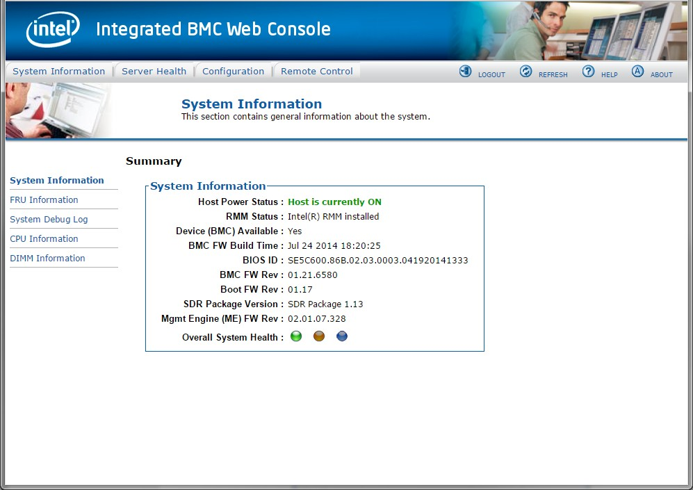

Configure the Remote Console
Configuration of each appliance requires access to the remote console over the IPMI interface.
To configure the remote console:
Make sure the appliance has a network cable attached to its Inbound port. Also, make sure the other end of the network cable is plugged into a switch that allows the appliance to connect to your network.
Plug a cable from your laptop or desktop machine into the IPMI port on the appliance. The IPMI addresses are set to these default values:
IP Address:
192.168.0.2Subnet Mask:
255.255.255.0
Adjust your laptop or desktop interface's IP address to be in this subnet (any value of
192.168.0.1to192.168.0.254, with the exception of192.168.0.2) and subnet mask of255.255.255.0.Open a browser and enter the IP address
192.168.0.2in the URL address field. The default login credentials areroot/netskope. Enter the credentials in the username and password fields and click Login.
After you successfully log in, you should see the System Information page:
 Click Remote Control in the top menu bar.
Click Launch Console. This downloads the file
jviewer.jnlpto the Download folder. Open the file by double-clicking it.Important
Make sure you have Java already installed as described in the Prerequisites section.

Caution
Some Java warning messages may show up in a window behind the main screen.
After the console is available, follow the steps described in Configuring the Management Plane Appliance and Configuring the Log Parser Appliance.
Tip
You may need to click on the console window to direct input to it.
After you have finished setting up the minimal network configuration on an appliance through the IPMI console, you can close your console window. Your appliance should be accessible from the network using ssh at this point.
Remove the network cable from your laptop or desktop machine and restore your laptop or desktop network settings to their previous values.